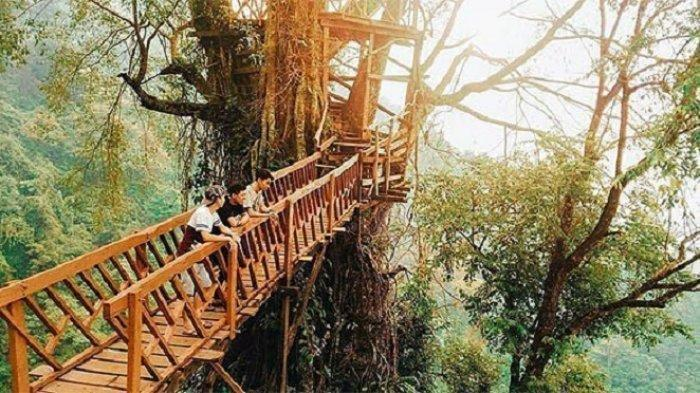

Sejarah
Pada awal abad ke-5 Masehi, Kota Bogor merupakan pusat Kerajaan Tarumanagara dengan raja yang bernama
Purnawarman.[5] Beberapa kerajaan lainnya lalu memilih untuk bermukim di tempat yang sama dikarenakan daerah
pegunungannya yang secara alamiah membuat lokasi ini mudah untuk bertahan terhadap ancaman serangan, dan di
saat yang sama adalah daerah yang subur serta memiliki akses yang mudah pada sentra-sentra perdagangan saat
itu.
Bogor dikenal dengan julukan Kota Hujan, karena memiliki curah hujan yang lumayan sangat tinggi. Kota Bogor
terdiri atas 6 kecamatan yang dibagi lagi atas sejumlah 68 kelurahan. Pada masa Kolonial Belanda, Bogor
dikenal dengan nama Buitenzorg yang berarti tanpa kecemasan atau aman tenteram.
Geografis

Kota Bogor terletak di antara 106°43’30”BT–106°51’00”BT dan 30’30”LS – 6°41’00”LS serta mempunyai ketinggian
rata-rata minimal 190 meter, maksimal 350 meter dengan jarak dari ibukota kurang lebih 60 km.
Wisata
Kebun Teh Puncak Bogor
Agrowisata Perkebunan Teh Puncak Bogor menjadi salah satu tempat piknik populer dan hits sehingga sayang
untuk
dilewatkan. Destinasi wisata Kebun Teh Puncak cocok untuk anda lawati guna refreshing dari sibuknya aktivitas
sehari-hari. Udara sejuk khas pegunungan dan panorama hijau mendamaikan dari wisata Kebun Teh Puncak akan
memanjakan traveler saat berkunjung. Menghabiskan hari libur di objek wisata alam Kebun Teh Puncak akan
dimanjakan dengan berbagai macam spot terbaiknya. Traveler tidak perlu khawatir akan kehilangan banyak uang
ketika berwisata ke Kebun Teh Puncak Bogor.
Devoyage Bogor

Puncak Bogor atau wisata alam lainnya, ada alternatif wisata lain yang bisa jadi pilihanmu. Devoyage
namanya. Deboyage menawarkan suasana khas Eropa yang Instagramable banget.Tak hanya spot foto, ada berbagai
wahana permainan untuk anak yang bisa dicoba. Cocok banget kalau ingin menghabiskan akhir pekan bersama
keluarga, berikut informasi Wisata Devoyage Bogor sebagai rekomendasi liburanmu.
Jembatan Gantung Curug Ciherang Bogor

Saat berwisata ke Curug Ciherang, kurang lengkap rasanya bila tidak mengunjungi jembatan gantungnya. Jembatan
gantung di Curug Ciherang ini dibuat dari kayu yang menghubungkan antara pohon besar satu dengan
pohon lainnya. Saat traveler melewati jembatan gantung akan merasakan sensasi yang cukup ekstrem. Traveler
harus menyiapkan mental yang cukup karena jembatan ini cukup panjang dan akan berakhir di sebuah
rumah pohon.